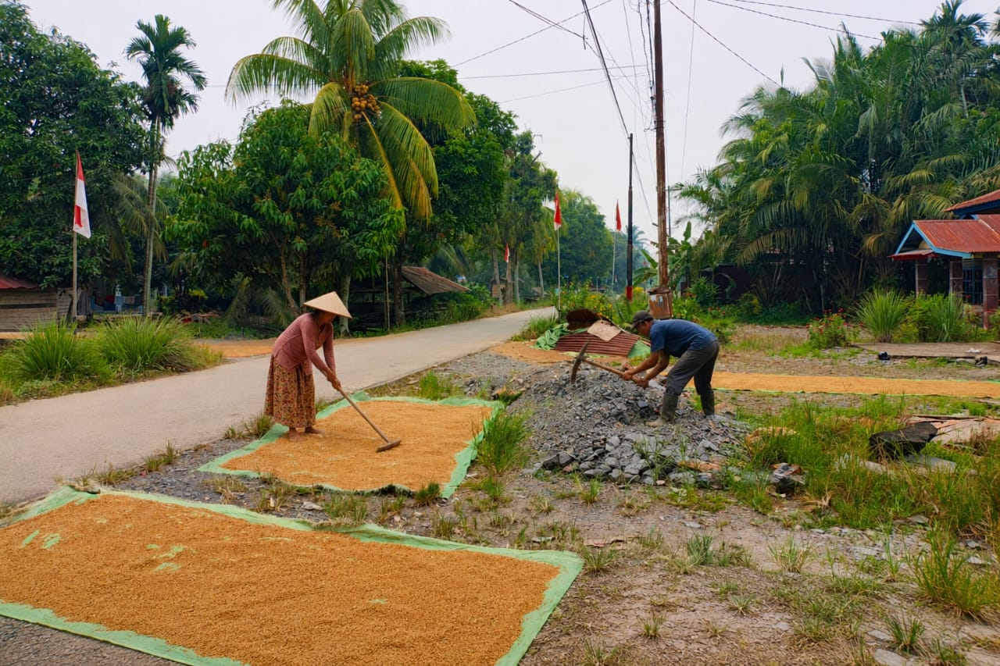
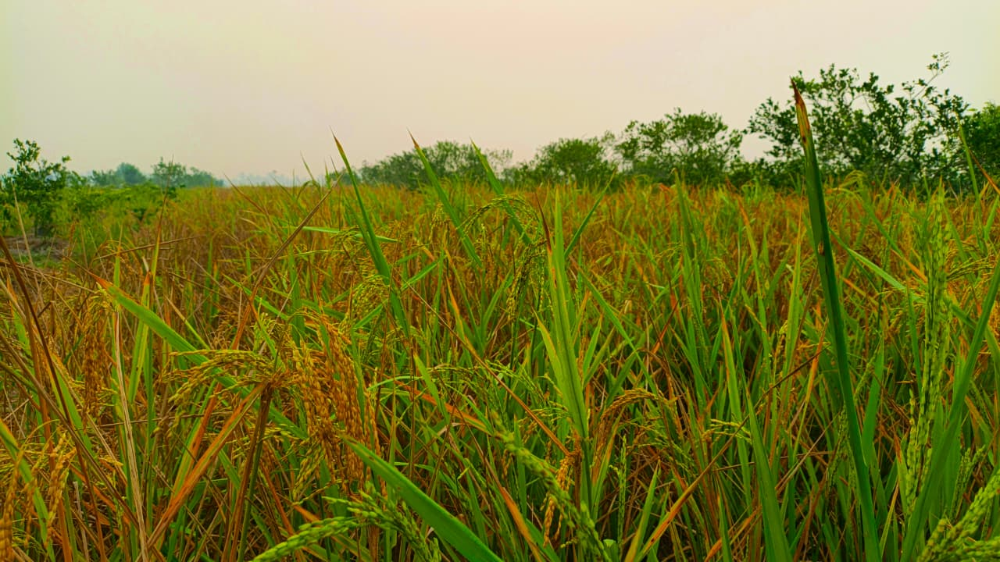
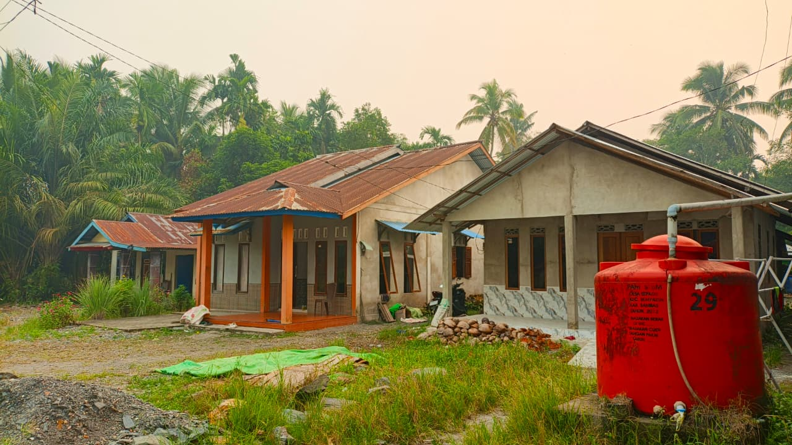
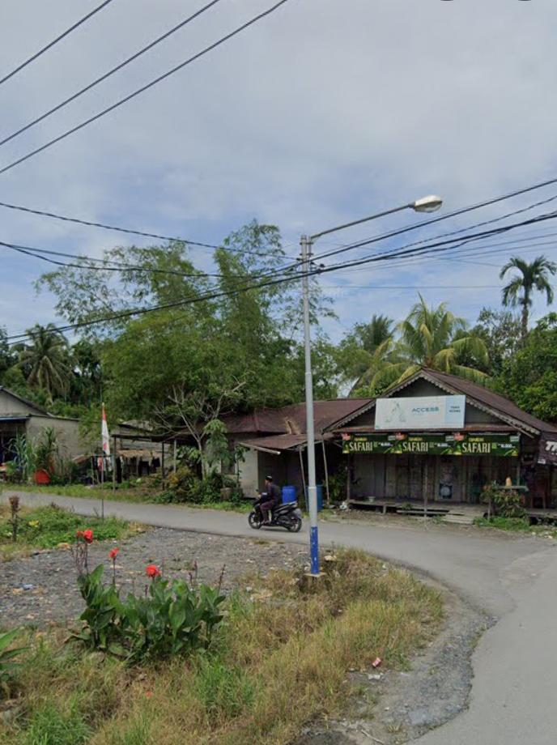
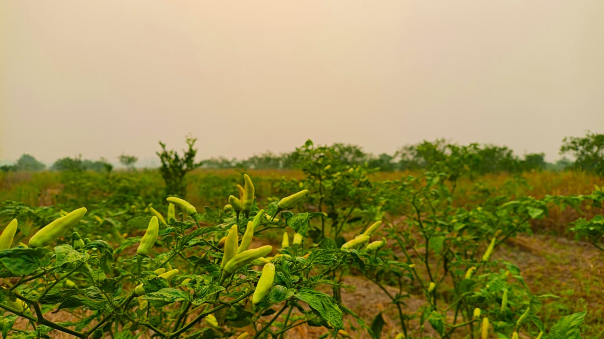
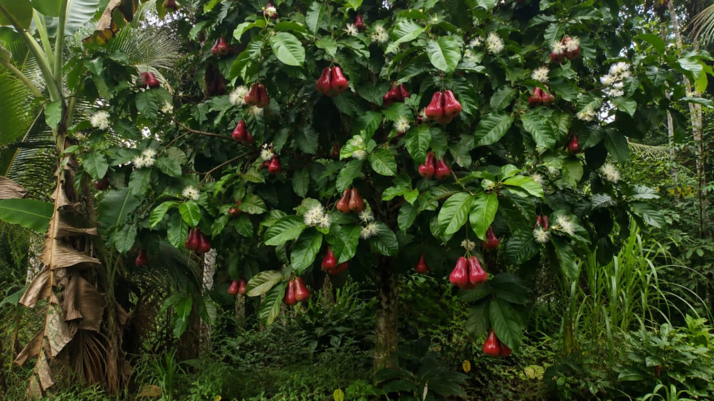
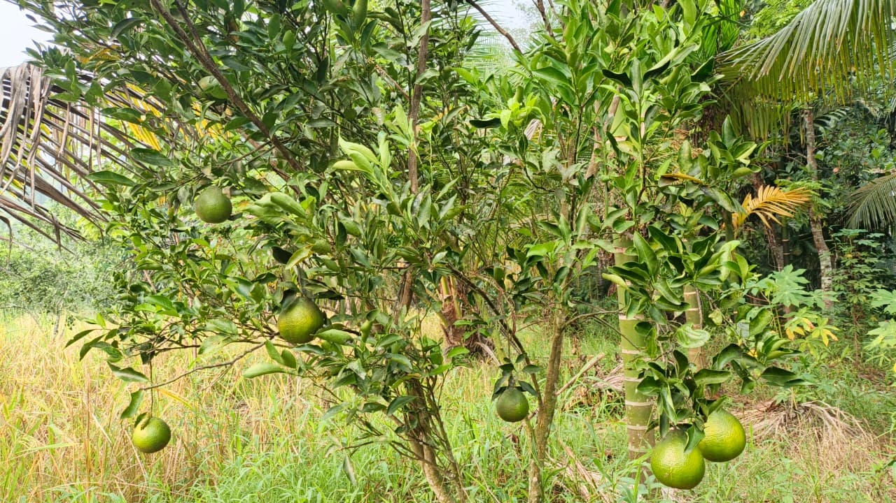
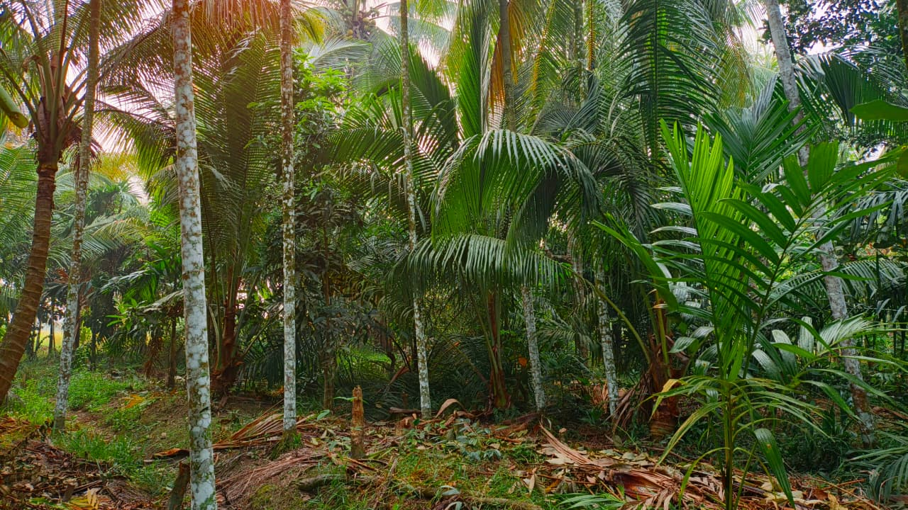
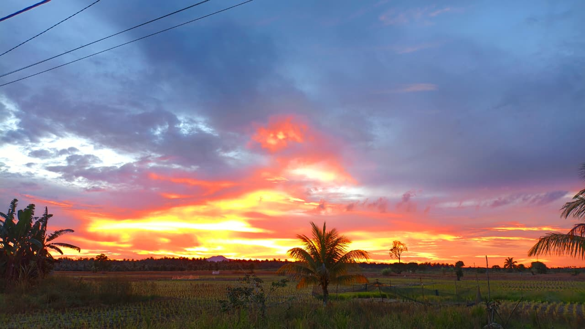

👨🌾 AKTIVITAS
Kegiatan Warga
Dari pekerjaan sederhana, tumbuh semangat dan kebersamaan. Setiap aktivitas menjadi bagian dari cerita kehidupan warga Desa Sepadu.
Melihat lebih dekat aktivitas, lingkungan, dan potensi Desa Sepadu.

Dari pekerjaan sederhana, tumbuh semangat dan kebersamaan. Setiap aktivitas menjadi bagian dari cerita kehidupan warga Desa Sepadu.

Hamparan sawah menjadi bagian dari pemandangan dan kehidupan masyarakat.

Rumah warga menjadi bagian dari suasana sederhana yang penuh cerita.

Jalan desa menjadi penghubung berbagai aktivitas masyarakat setiap hari.

Potensi pertanian yang menjadi bagian dari kehidupan desa.

Buah lokal yang tumbuh di lingkungan masyarakat.

Salah satu potensi alam yang memberi warna bagi kehidupan desa.

Lingkungan hijau yang menjadi bagian penting dari alam sekitar.

Cahaya matahari sore, hamparan hijau, dan suasana lingkungan desa memberikan kesan damai dalam keseharian.